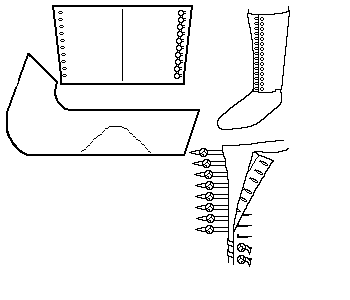

Front Button Boot (c1200-1500)
This design is based on a description found in Schanck
Return to [Index] or [Next]
Footwear of the Middle Ages - Historical Shoe Designs/Number
75, by I. Marc Carlson. Copyright 1998
This page is given for the free exchange of information, provided the
Author's Name is included in all future revisions, and no money change
hands, other than as expressed in the Copyright Page.